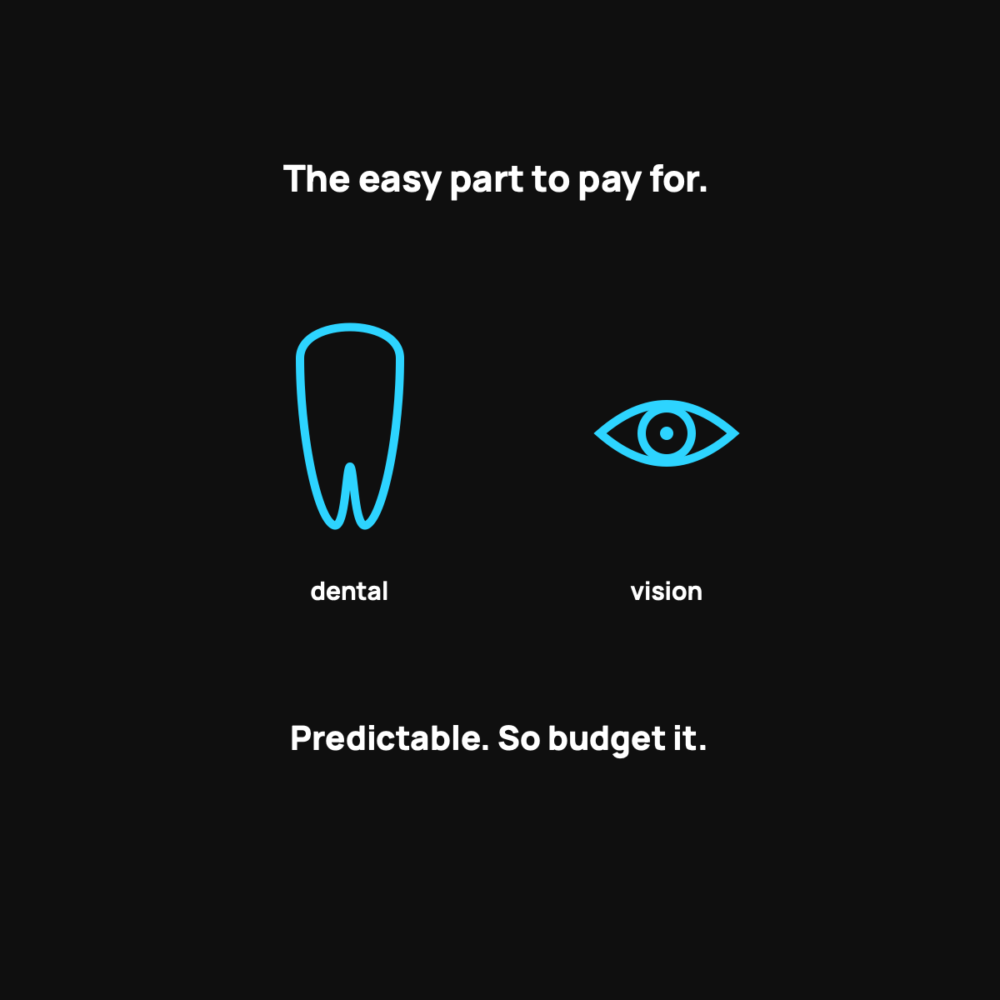

Dental and Vision Without Insurance
These are the predictable, easy part. Budget them, don't fear them.
Dental and vision are the easy part of going without insurance because they're predictable, not emergencies. Ask the dentist for the cash price or use a dental savings plan. Pay for the eye exam directly, then buy glasses online for a fraction of the shop price. Add a cheap standalone dental or vision plan only if your family truly needs a lot of work.

Dental and vision are the two things that trip people up when they think about leaving traditional insurance, or when they go with health sharing, which doesn't cover routine dental and vision. So people panic a little: "How will I afford the dentist and my glasses?" Take a breath. This stuff is way more manageable to pay for directly than the big medical scary stuff. Here's exactly how my family handles it, no insurance required.
The mindset: these are predictable, so budget them
Here's the key insight. Dental cleanings and eye exams aren't surprise emergencies. You know they're coming. A cleaning twice a year, an eye exam once a year, new glasses every couple of years. Predictable costs don't need insurance, they need a plan. And they're small enough that a plan is easy.
Insurance is for the unpredictable and expensive. Routine dental and vision are the opposite of that, which is exactly why paying directly usually works out fine.
Dental: just ask for the cash price
Most routine dental work is affordable at the cash price if you ask. A cleaning, exam, and X-rays as a cash-pay patient is often a very reasonable number, sometimes cheaper than what you were paying in monthly dental insurance premiums for coverage you barely used.
A few ways to keep it cheap:
- Ask for the cash or self-pay price up front. Same trick that works everywhere in healthcare.
- Consider a dental savings plan. Not insurance, just a membership that gets you discounted rates at participating dentists for a small annual fee.
- Check a dental school near you for low-cost cleanings done by supervised students.
Vision: shop like it's any other purchase
Eye care splits into two easy parts. The exam, and the glasses or contacts.
- The exam is usually cheap to pay for out of pocket, often less than a hundred dollars.
- Glasses and contacts are where people overpay by habit. Online retailers sell glasses for a fraction of what the shop next to the eye doctor charges. Get your prescription and your pupillary distance, then shop around. The savings are genuinely wild.
When a small standalone plan makes sense
If your family needs a lot of dental work, or someone needs regular specialized eye care, a cheap standalone dental or vision plan can still be worth it. These are inexpensive on their own and totally separate from your medical coverage. There's no rule that says you have to solve everything with one product. Layering a small dental plan on top of health sharing is a perfectly normal, smart move.
The takeaway
Dental and vision feel scary without insurance, but they're actually the easy part. They're predictable, so you budget for them. Ask for the cash price, shop for glasses like any other purchase, and add a cheap standalone plan only if you truly need one. The dentist and the eye doctor are not the reason to fear leaving traditional insurance.
Questions I get about this
How much does a dental cleaning cost without insurance?
As a cash-pay patient, a cleaning, exam, and X-rays is often a very reasonable number, sometimes less than what you were paying in monthly dental premiums for coverage you barely used. Ask for the self-pay price up front, or check a dental school near you for low-cost cleanings.
What is a dental savings plan?
Not insurance. It's a membership that gets you discounted rates at participating dentists for a small annual fee. Worth a look if your family goes to the dentist a lot.
How do I save money on glasses?
Get your prescription and your pupillary distance from the exam, then shop online. Online retailers sell glasses for a fraction of what the shop next to the eye doctor charges. The exam itself is usually less than a hundred dollars out of pocket.
Nothing here is medical, tax, or financial advice, just what my family actually does. My family uses CrowdHealth, so I'll always flag when a post is a referral. This one isn't.

Written by David Dewese
Normal guy with a full-time job, wife, and kids. Spent twenty years pursuing music and creative ventures before starting a family. Sharing tips and tricks on how to thrive while living on an artist's income. Not a financial advisor. More about me.
New here?
Normaltown USA is plain-English money and healthcare help for normal people, written by a regular guy with a family of four. No jargon, no hype. Start here, or read the FAQ.